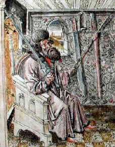
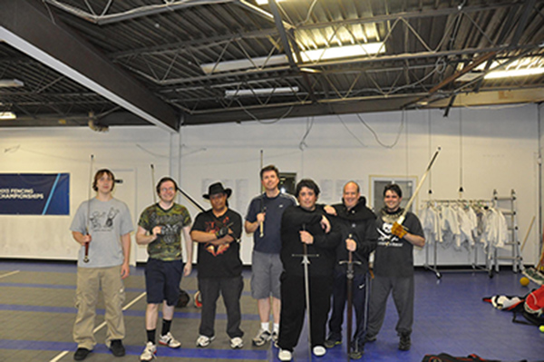

Welcome to my little page about a big subject

Glad you could drop in and read my musings on a subject
I've devoted a good chunk of my adult life to. If you've ever yelled at a Hollywood movie saying, "That's not what is was like at all". If you've
always longed to reach behind the glass in the MET nad hold somehting out of history, If you've ever wanted to
really understand what the Knightly arts were about, you've come to (I hope) the right place.
On this page I'l try and cover the basics. Starting with the anatomy of a sword, we'll move on to how to hold and finally the very basic wards (guards)
That the sword is held in and transitions through when in motion. (wow, that was a long sentence!) Motion is the key. A fencer, like any good fighter, should alwyas
be in motion. A fight (please keep it friendly folks) is always changing and mving. A good fighter will move and flow
with the tempo of the fight. Did I mention tempo? Yes, a fight has a tempo. Remember this becasue later on in your training
it wil be important to learn how to establish and maintain your own tempo in fencing match.
You
must be the one to establish and maintain the tempo, that is if you'd like to win. This is called being in the Vor, or the now.
More on that in a later post. For now, let's get in to why we're both here.
Sign up for lessons now and you'll:
Learn the anatomy of and geometry behind swords and other medieval weapons.
What exactly makes a sword a sword and not just a large knife? You’ll certainly find out.
Lean a martial discipline that has kept countless people alive in real combat situations.
The concepts you’ll learn can be applied across a wide array of weapons and even work in modern self defense situations
Know first hand just what it took to be a Knight or Mercenary in during Medieval times through the early Renaissance period.
From tactical thinking in a fight to physical conditioning, this will challenge you like nothing before, and more than you ever thought possible.
Who is this Michael Capanelli guy anyway?
"Princes and Lords learn to survive with this art, in earnest and in play.
But if you are fearful, then you should not learn to fence.
Because a despondent heart will always be defeated, regardless of all skill."
~Fechtmeister Sigmund Ringeck, 1440~
My names Michael and man do I love fencing. I’ve been a student of Martial Arts for as long as I remember.
I got my feet wet as a kid in Shotokan karate. I had the privilege of studying with Miyazaki when he actually taught classes.
Not that this has any meaning unless you’re in to Shotokan but bear with me. Then form there I was invited to Study Goju-Ryu.
That was a tough road but really laid the foundation for the type of physical conditioning I’d need for what would come.
Not only did I have a love for Martial Arts, but I loved fantasy novels as well.
As a kid I must have read everything from Tolkien, Arthur C Clark, and Robert E Howard I could get my grubby little hands on.
I ate it up. I hung on every word, every fight, every monster slain, every… well you get the point.
This sparked in interest in me that persists to this day.
So with an interest in Martial Arts and Sci-fy and fantasy novels, what’s a boy to do next?
Well, the next logical step, combine both interests.
After seeing the first lord Of The Rings movie I became curious about how swords were really used.
my martial arts experience told me that what I was seeing in the movies was impractical from a martial standpoint.
Long blocks with the edge, Wild swings, and a plethora of other bad techniques all ran contrary to effective fighting.
They looked cool but would get you hurt or worse in a fight.
Well, in walked Google where search yielded a website dedicated to the research and recreation of the lost Western Martial Tradition.
I was shocked to see an entire system before me. Fighting with the sword, dagger, poleaxe, wrestling, you name it.
Not only was it a western system that used my favorite childhood icon, but it was as complete as any Eastern Art I’d been exposed to.
This was it! This was what I’ve been searching for. That was a number of years ago and I haven’t looked back since
A little on what I do
So you may be asking yourself, “Ok Mike, that still doesn’t tell me what it is you do exactly.”
To summarize,I train with and use swords (get your mind out of the gutter) and other “weapons of the list” that a knight or Nobleman
would have known how to use by the tender age of 15.
These men (And in some cultures women too) trained their whole adolescent life for war.
The teachings were compiled in fighting books the masters would write, their techniques hidden in verse that only their students would understand.
I learn form these manuals and attempt to recreate the teachings of these masters as it would have been when it was thriving and in demand.
My group, Long Island Historic Fencing Society, and my self train in the use of the Long sword,
Sword and shield, sword and buckler, dagger, poleaxe, staff, and even a hand to hand system that is very similar in many ways to Aiki-jujitsu.
We do this with intent, as if we were going to use it in war.
In this way it ceases to be an anachronism and becomes a martial art yet again, able to defend you in even these modern times.
Of course my goal isn’t self-defense but it is a by-product of our training.
Classes are intended to build a progressive understanding of the art and will be offered at one of three levels – Novice; Intermediate and Advanced Levels.
The training is cyclical. First the basic concepts are introduced.
Then basic tactics are added, and lastly advanced techniques such as sword taking and “wringen arm schwert” are practiced.
After the 15th session you’ll cycle back to the beginning stages till a complete understand of the system at all levels is achieved.
Wow, that seems like a lot to cover. It’s really not as daunting as it seems when you read it.
It helps that we have a good bunch of guys to train with.

If you are interested in studying and practicing this celebrated, historically accurate medieval martial art, then why not come down and check us out.
Who knows, you may find you’ve rekindled a fire you forget even burned inside. I know I did.